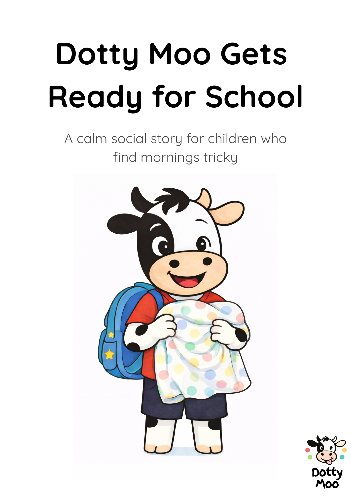
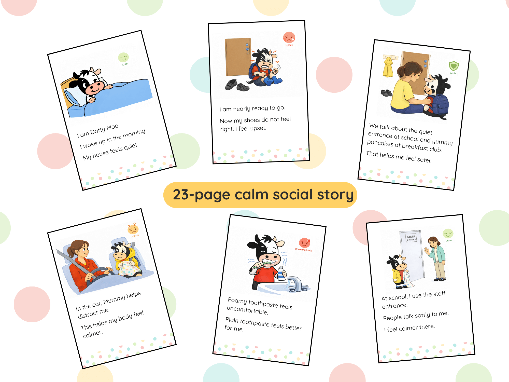

Dotty Moo Gets Ready for School
A calm social story designed to support predictable morning routines and smoother school transitions.
What this resource is
Dotty Moo Gets Ready for School is a gentle, printable social story created to help children understand and feel more confident about the steps involved in getting ready for school.
It is designed to be read when a child is calm, not during a moment of distress, and can be revisited regularly as part of a familiar routine.
Who this may help
- Children who find mornings unpredictable or overwhelming
- Children who benefit from visual and consistent explanations
- Families looking for calm, low-pressure routine support
How it is used
Many families find it helpful to read the story together at a calm time, such as the evening before school or during a quiet moment.
Pages can be revisited individually, personalised to match what already works at home, or used alongside other visual routine supports.
What is included
- A printable social story in PDF format
- Clear, child-friendly illustrations
- Simple language designed to be reassuring and predictable
Practical details
- Instant digital download
- Printable PDF
- For personal and home use